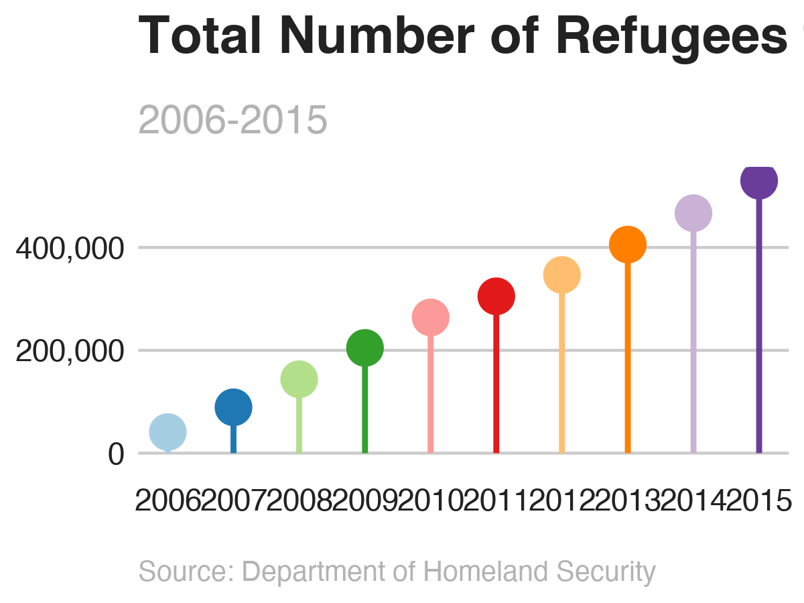
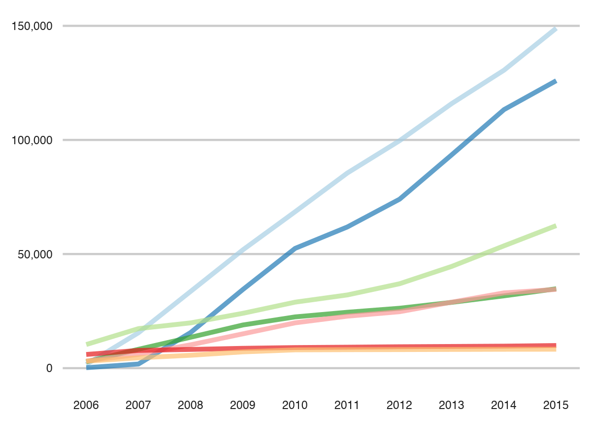

Visualizations of refugee data with a lollipop chart
total <- refugees_countries_cumulative %>%
group_by(year_date) %>%
summarise(total = sum(cumulative_total, na.rm = TRUE))
mypalette <- brewer.pal(10,"Paired")
# Total number of refugees over time
total_plot <- ggplot(total,
aes(x = year_date, y = total)) +
geom_pointrange(aes(ymin = 0, ymax = total),
fatten = 5, size = 1, col = mypalette) +
scale_y_continuous(labels = comma) +
scale_x_date(date_breaks = "1 year", date_labels = "%Y") +
labs(x = NULL, y = NULL,
title = "Total Number of Refugees to the U.S.",
subtitle = "2006-2015",
caption = "Source: Department of Homeland Security") +
bbc_style() +
theme(panel.grid.minor = element_blank(),
plot.title = element_text(face = "bold", size = rel(1.7)),
plot.subtitle = element_text(face = "plain", size = rel(1.3),
color = "grey70"),
plot.caption = element_text(face = "italic", size = rel(0.9),
color = "grey70", hjust = 0),
axis.text = element_text(size = rel(1)),
legend.position = "none")

total plot
complete_refugees$origin_country <- factor(
complete_refugees$origin_country, levels = c(
"Myanmar (Burma)","Iraq","Somalia","Iran","Cuba","Russia","Vietnam"))
total_over_time_plot <- ggplot(complete_refugees,
mapping = aes(year, cumulative_total,
color = origin_country)) +
geom_line(size = 1.1, alpha = .7) +
scale_color_brewer(palette = "Paired") +
scale_x_continuous(breaks = 2006:2015, minor_breaks = 2006:2015) +
scale_y_continuous(labels = comma) +
labs(x = NULL, y = NULL) +
bbc_style() +
theme(panel.grid.minor = element_blank(),
axis.text = element_text(size = rel(.5)),
legend.position = "none")

total over time
rankings_plot <- ggplot(alltime_rank,
aes(x = year, y = rank, color = origin_country)) +
geom_line(alpha = .6, size = 1.5) +
geom_point(size = 1) +
geom_point(alpha = .6, size = 3) +
geom_point(size = 1) +
scale_color_brewer(palette = "Paired") +
scale_y_reverse(breaks = 1:7) +
scale_x_continuous(breaks = 2006:2016, minor_breaks = 2006:2016) +
geom_flag(data = country_flags_start,
aes(x = x, y = y, country = country, size = 1),inherit.aes = FALSE) +
geom_flag(data = country_flags_end,
aes(x = x, y = y, country = country, size = 1),inherit.aes = FALSE) +
theme(legend.position = "none") +
labs(x = NULL,
y = NULL) +
bbc_style() +
theme(panel.grid.minor = element_blank(),
axis.text = element_text(size = rel(.5)),
legend.position = "none")